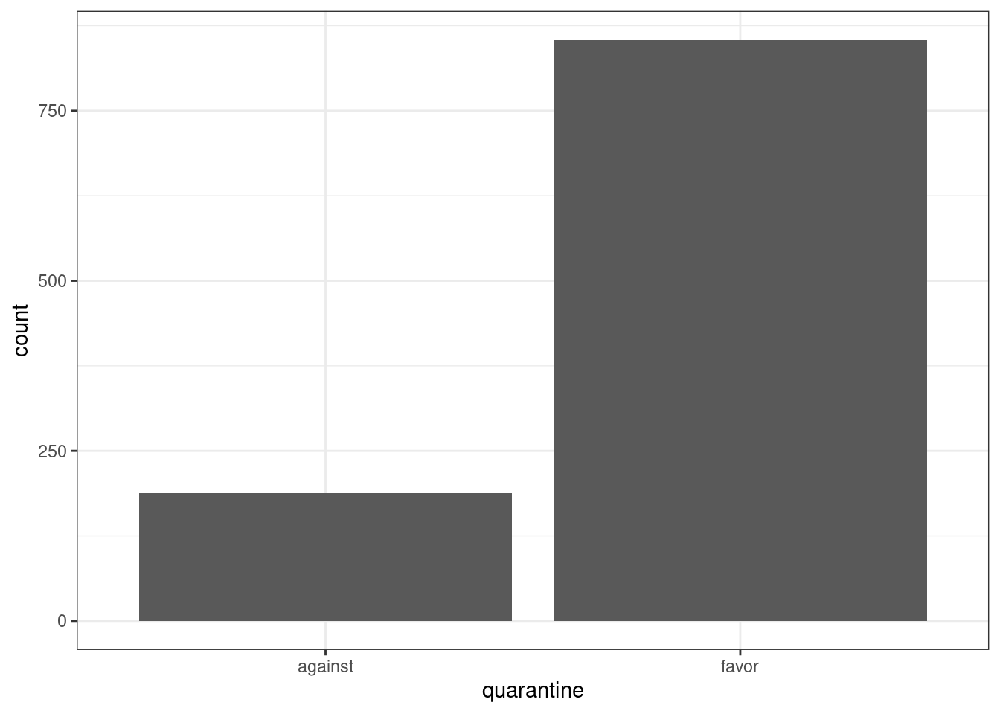
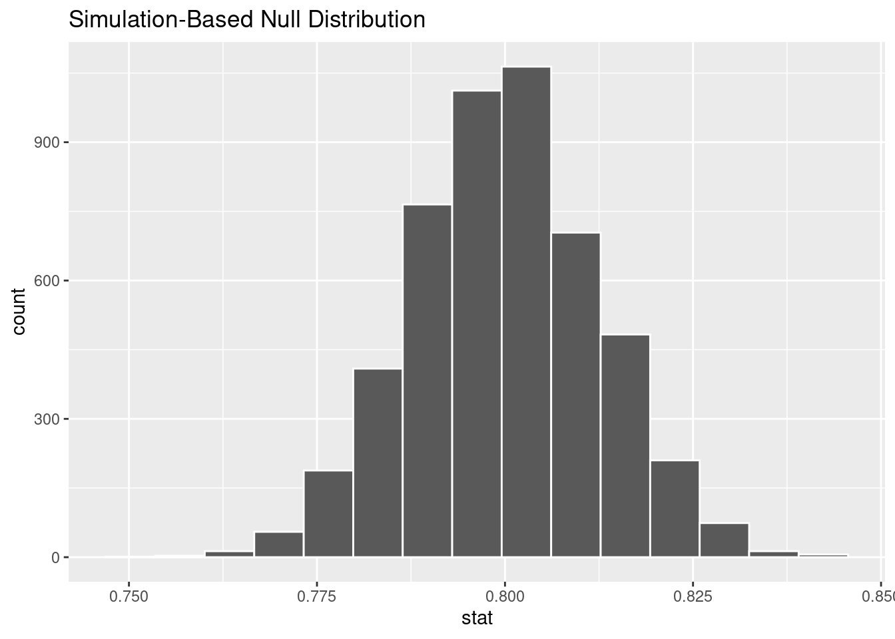
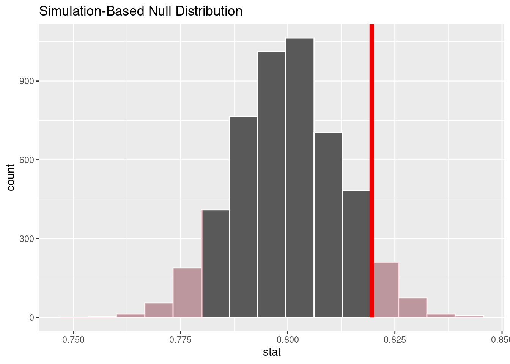
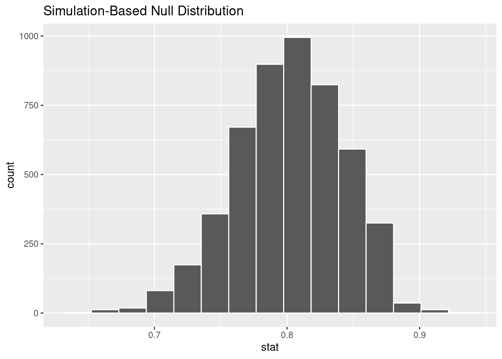
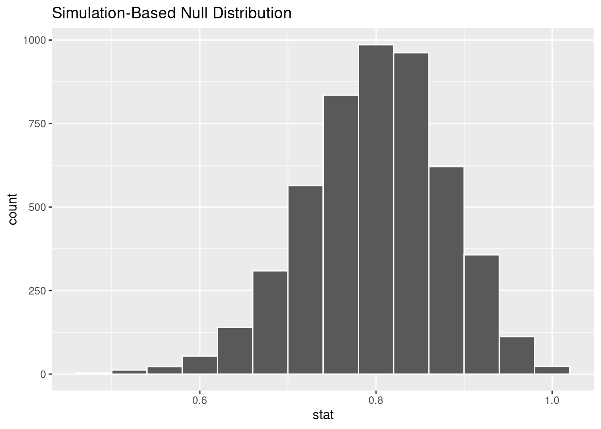
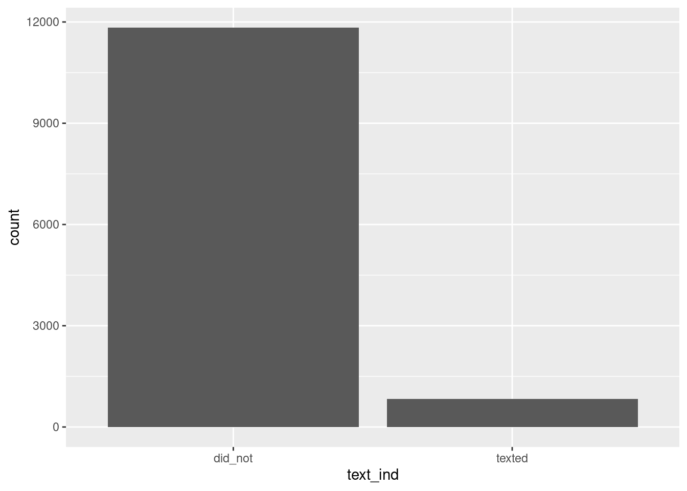
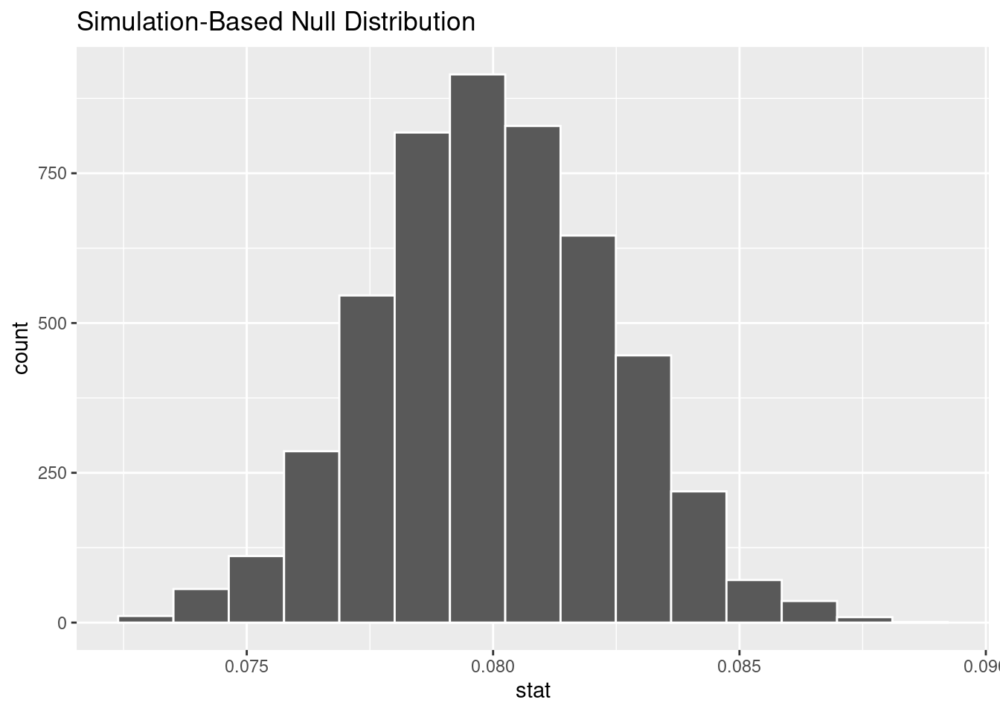
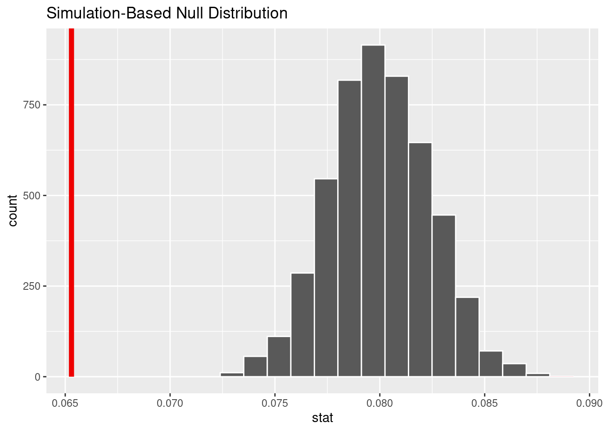

ebola_survey |> glimpse()Rows: 1,042
Columns: 1
$ quarantine <fct> favor, favor, favor, favor, favor, against, favor, favor, f…In this lab, we will work with the infer package in R to conduct statistical inference on American public opinions/public health sentiment during the Ebola virus epidemic of 2013-2016.
The 2013–2016 epidemic of Ebola virus disease, which was largely centered in West African countries such as Guinea, Liberia, and Sierra Leone, caused major loss of life and socioeconomic disruption. It is to-date the most severe outbreak of Ebola virus disease in history. In October 2014, a doctor who had recently been treating Ebola patients in Guinea presented at a New York City hospital with slight fever; he was subsequently diagnosed with Ebola.
Shortly after this diagnosis became public, a poll was taken of 1,042 New York adults, asking them whether they favored a “mandatory 21-day quarantine for anyone who has come in contact with an Ebola patient.” Survey respondents replied with the options: “favor” or “against”. The survey results are stored in the dataset ebola_survey; the following code displays a summary of that data set:
ebola_survey |> glimpse()Rows: 1,042
Columns: 1
$ quarantine <fct> favor, favor, favor, favor, favor, against, favor, favor, f…We can display a summary of the counts using the table() function.
ebola_survey |> table()quarantine
against favor
188 854 We can also visualize the data with a bar graph.
# Creating a bar plot to summarize the observed data distribution
ebola_survey |> ggplot(aes(x=quarantine)) +
geom_bar() +
theme_bw()
Use the package infer to find a point estimate \(\widehat{p}\) for the true proportion of New York adults who favored a mandatory 21-day quarantine period for close contacts of Ebola patients in the full data set (ebola_survey).
# Find the point estimate for p using ebola_survey here!
ebola_survey |> specify(response = quarantine, success = "favor") |>
calculate(stat="prop")Response: quarantine (factor)
# A tibble: 1 × 1
stat
<dbl>
1 0.820Suppose the public health bureau wants to know whether or not the true proportion of New Yorkers who support a mandatory quarantine period is equal to \(p_0 = 0.80\). The null and alternative hypotheses in terms of the true proportion \(p_0\) are stated below.
\[H_0: p = 0.80\] \[H_A: p \neq 0.80\]
You want to preform a hypothesis test, assuming a significance level of \(\alpha = 0.05\). We can use the infer package to do this. The infer package uses a workflow to generate a null distribution for our data. This package uses verbs as function names that describe each step that is happening.
specify() the variables of interest in your data frame.
hypothesize() set the null hypothesis.
generate() replicates of bootstrap resamples with replacement.
calculate() the summary statistic of interest.
visualize() the resulting bootstrap distribution and confidence interval.
A summary of these steps is provided in Chapter 9.3 of ModernDive. A figure from this book is provided below:

We use the specify() function to specify the variable of interest. In this case we are interested in proportion of those who selected “favor” which is listed in the quarantine column, thus we set response argument to quarantine. Since we are interested in the proportion of those who “favor” quarantining, and not the proportion who are “against”, we set the argument success to “favor”.
The function calculate() is used to generate an appropriate summary statistic. We are interested in the proportion so we will set the stat argument to “prop”. The output below is displaying the proportion of those that favored quarantining from the ebola_survey data.
# Observed test statistic
obs_stat <- ebola_survey |>
specify(response = quarantine, success ="favor") |>
calculate(stat="prop")
obs_statResponse: quarantine (factor)
# A tibble: 1 × 1
stat
<dbl>
1 0.820In order to conduct hypothesis tests using the infer workflow we need to provide what the hypothesized value is under \(H_0\). To do this we use the hypothesize() function which has two arguments. The first argument specifies what type of setting we have. In this case we are interested in a test for a single proportion (\(\hat{p}\)) so we set the null argument to “point” to reflect this. The next argument \(p\) is were we specify what the hypothesized value is under \(H_0\). For us this is \(p_0 = 0.8\), so we set the \(p\) argument to 0.8.
The next function generate() generates data sets under different settings. We set the argument type equal to “draw” to create new data sets we might expect to obtain if the \(H_0\) was true. The argument reps dictates how many data sets to generate. Generally 1000 or more is a good guideline.
We have used the function calculate() again to indicate that we want to calculate the proportion of those who “favor” for each of the generated data sets.
\[\hat{p}_{sim1}, \hat{p}_{sim2}, \dots, \hat{p}_{5000}\]
These proportions are `what-if’ values we might expect if the true proportion of New Yorkers who support a mandatory quarantine period is equal to what we expect if \(H_0\) was true (i.e. \(p_0 = 0.8\)).We preview these hypothetical values below.
#set the seed for the generate() function, without it you will not get the same pvalue below until the document is rendered.
set.seed(62)
# Generating the null distribution using a parametric bootstrap
null_dist <- ebola_survey |> specify(response = quarantine, success = "favor") |>
hypothesize(null = "point", p = 0.8) |>
generate(reps = 5000, type = "draw") |>
calculate(stat = "prop")
null_distResponse: quarantine (factor)
Null Hypothesis: point
# A tibble: 5,000 × 2
replicate stat
<int> <dbl>
1 1 0.784
2 2 0.789
3 3 0.798
4 4 0.797
5 5 0.788
6 6 0.794
7 7 0.798
8 8 0.804
9 9 0.799
10 10 0.795
# ℹ 4,990 more rowsWe next visualize our null distribution using the function visualize(). This produces a histogram of our `what-if’ values.
null_dist |> visualize()
The method we used to generate the histogram above is called parametric bootstrap. Null distributions can be computed via a mathematical model, or by the computer using a parametric bootstrap. Null distributions represent the values for \(\hat{p}\) we would see if \(H_0\) was true.
From these null distributions we are now able to find our p-value and make a conclusion. The p-value is calculated by counting the number of simulated proportions that are more extreme then the proportion we calculated with our original data set (\(\hat{p} = 0.820\)). The infer package has a function to calculate this value as well called get_p_value(). In this function you must supply the proportion for your original data set, which we named obs_stat. This function has an additional argument called direction which indicates the alternative hypothesis.
# Visualizing the null distribution and finding the p-value
null_dist |> get_p_value(obs_stat = obs_stat, direction = "two-sided")# A tibble: 1 × 1
p_value
<dbl>
1 0.121We can also use the visualize() and shade_p_value() functions together to visualize how the p-value was calculated.
null_dist |> visualize() +
shade_p_value(obs_stat = obs_stat, direction = "two-sided")
We observed a p-value of 0.121 which was greater than our significance level of \(\alpha = 0.05\). We fail to reject the null hypothesis; we do not have sufficient evidence to rule out that exactly 80% of all New Yorkers support a mandatory 21-day quarantine for close contacts of Ebola patients.
Not surprisingly, every time you take another random sample, you might get a different sample proportion. It’s useful to get a sense of just how much variability you should expect.
Let’s say that three news agencies conducted surveys on the Ebola virus and quarantining.
We’ve created these second two data sets for you below:
set.seed(62)
# Moderately-sized dataset
NBC_survey<- ebola_survey[sample(1:nrow(ebola_survey), 100), ]
# Small dataset
WSJ_survey <- ebola_survey[sample(1:nrow(ebola_survey), 25), ]We can use infer for each two new data sets and visualize the null distributions.
# Simulated NBC graph
NBC_null_dist <- NBC_survey |> specify(response = quarantine, success = "favor") |>
hypothesize(null = "point", p = 0.8) |>
generate(reps = 5000, type = "draw") |>
calculate(stat = "prop")
NBC_null_dist |> visualise()
# Simulated WSJ graph
WSJ_null_dist <- WSJ_survey |> specify(response = quarantine, success = "favor") |>
hypothesize(null = "point", p = 0.8) |>
generate(reps = 5000, type = "draw") |>
calculate(stat = "prop")
# bins was changed to remove gaps in the graph.
WSJ_null_dist |> visualise(bins =14)
All three distributions are symmetric (or nearly so) and appear to be roughly unimodal. The spread of the distributions decrease as the sample size increases. Recall that the standard error (SE) is the standard deviation for the distribution of \(\hat{p}\). For the null distribution the standard error formula is
\[SE = \sqrt{\frac{p_0(1-p_0)}{n}}\]
Hence for the three news agencies from the formula we would expect the following standard errors (hover over the latex to see the equation:
We can also estimate the standard error directly from the null distributions we generated.
# original (full sized) ebola_survey
null_dist |> summarize(std_error = sd(stat))# A tibble: 1 × 1
std_error
<dbl>
1 0.0123# moderate-sized
NBC_null_dist |> summarize(std_error = sd(stat))# A tibble: 1 × 1
std_error
<dbl>
1 0.0398# small
WSJ_null_dist |> summarize(std_error = sd(stat))# A tibble: 1 × 1
std_error
<dbl>
1 0.0801The standard error for \(\widehat{p}\) when \(n = 1042\) is about 0.012, compared to 0.08 (over 6 times larger!) when \(n = 25\). When we take a larger sample, we have more information at our disposal, so there is less variability from sample to sample. This can have big effects for our p-values, confidence intervals and hypothesis tests.
Answer: New York State Residents (NYC residents is also acceptable)
infer to find a point estimate \(\widehat{p}\) for the true proportion of New York adults who favored a mandatory 21-day quarantine period for close contacts of Ebola patients in each of the two smaller data sets NBC_survey and WSJ_survey.NBC_survey |>
specify(response = quarantine, success = "favor") |>
calculate(stat = "prop")Response: quarantine (factor)
# A tibble: 1 × 1
stat
<dbl>
1 0.86WSJ_survey |>
specify(response = quarantine, success = "favor") |>
calculate(stat = "prop")Response: quarantine (factor)
# A tibble: 1 × 1
stat
<dbl>
1 0.64Answer: The largest sample from the ebola_survey. It uses all the data and the other samples are subsets of it.
For the rest of the following questions you will be using analyzing at data from the Youth Risk Behavior Surveillance System (YRBSS) survey. This is a data set with high schoolers that is used to help discover health patterns. The dataset is called yrbss. We will use the yrbss_survey data set below which isolates the variable of interest. A recent claim stated that 8% of teenagers texted while driving in the last 30 days, and we want to conduct a hypothesis test with significance level \(\alpha = 0.05\).
# This code is making a variable text_ind that has two levels: "texted" and "did_not"
yrbss_survey <- yrbss |>
filter(!is.na(text_while_driving_30d)) |>
transmute(text_ind = ifelse(text_while_driving_30d == "30", "texted", "did_not"))Answer: The null hypothesis is that 8 percent of teenagers texted while driving. The alternative is that it is not 0.08.
\[H_o: p = 0.08 \\ H_a: p \ne 0.08 \]
# We can use count here.
yrbss_survey |>
count(text_ind)# A tibble: 2 × 2
text_ind n
<chr> <int>
1 did_not 11838
2 texted 827yrbss_survey |>
ggplot()+
geom_bar(aes(text_ind))
This may be hard coded or calculated with infer.
observed_stat <- yrbss_survey |>
specify(response = text_ind, success = "texted")|>
calculate(stat = "prop")
observed_statResponse: text_ind (factor)
# A tibble: 1 × 1
stat
<dbl>
1 0.0653Note: No graph is required for this, just the dataset, preferably saved as something. I imagine that many students will make the graph.
# setting seed so everyone has the same answers when working through the assignment, all answers will be the same in the rendered document.
set.seed(62)
#students need this code to get credit
null_dist_2 <- yrbss_survey |>
specify(response = text_ind, success = "texted")|>
hypothesize(null = "point", p = 0.08) |>
generate(reps = 5000, type = "draw") |>
calculate(stat = "prop")
null_dist_2 |> visualise()
null_dist_2 |>
get_p_value(obs_stat = observed_stat, direction = "both")Warning: Please be cautious in reporting a p-value of 0. This result is an approximation
based on the number of `reps` chosen in the `generate()` step.
ℹ See `get_p_value()` (`?infer::get_p_value()`) for more information.# A tibble: 1 × 1
p_value
<dbl>
1 0null_dist_2 |>
visualize() +
shade_p_value(obs_stat = observed_stat, direction = "both")
Answer: The pvalue is essentially zero. This means it is extremely unlikely that the true proportion of teens texting while driving is 0.08, and it likely a different number.
Answer: The center of the null distribution would not change, as it is determined by the null hypothesis which is 0.08. The sample size would likely be smaller as Holyoke highschool doesn’t have 12665 students, so the standard error of the null distribution would increase.